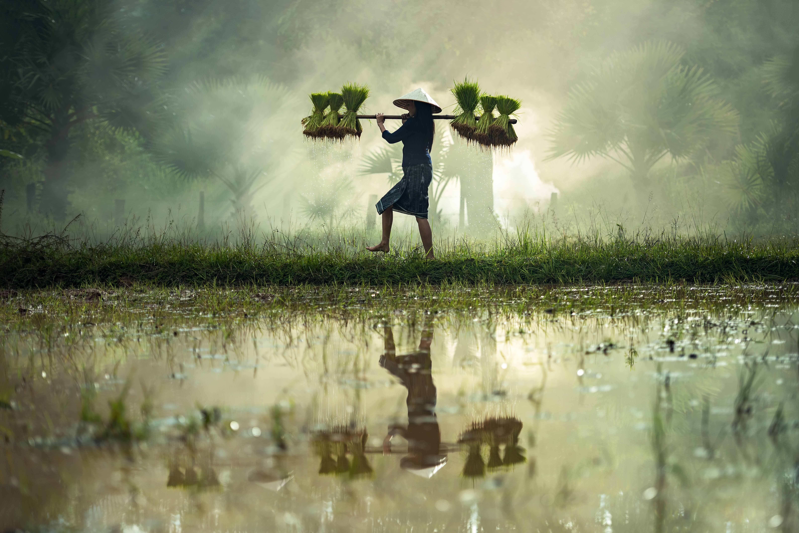

Segundo a tag dois da ONU diz: "Acabar com a fome e alcançar a segurança alimentar e melhoria da nutrição e promover a agricultura sustentável", e hoje em dia 45% de mortalidade infantil é causada por conta da desnutrição, mas já por outro lado 672 milhões de pessoas sofrem de obesidade e 1,3 bilhões estão acima do seu peso e a cada ano 3,4 milhões de pessoas morrem por conta de sobrepeso, mas felizmente hoje se nos unirmos poderemos alterar todos estes números de desnutrição e obesidade, podemos fazer isso doando alimentos, cultivando parte da nossa alimentação, orientando uns aos outros para uma alimentação saudável ou até mesmo para novas receitas e também o programa fome zero foi criado para combater as causas estruturais que geram a exclusão social e para garantir a segurança alimentar dos brasileiros que foi fundado em 2003.

A doação de alimentos ajuda aos necessitados a combater a fome e ter o que comer.
A cultivação de alimentos ajudará ao meio ambiente e a nós mesmos a economizar e ter um bem estar.
A cultivação também nos ajuda lucrar, pois podemos vender o que produzimos e também a ter um trabalho digno.
Deixando o desconhecimento de lado, com o agro negócio os benefícios da agricultura sustentável vem surgindo e já provaram que é possível se aliar ao respeito e ao meio contando com resultados positivos para os agricultores. A agricultura sustentável é um conceito usado para definir as práticas de agricultura e as sustentabilidades. A atividade econômica permite respeito ao meio ambiente mantendo equilíbrio dentre ambas as partes. Mas para que a agricultura sustentável seja uma realidade, todos nós precisamos adotar algumas práticas nas plantações para diminuir os impactos causados no meio ambiente e criar soluções para ajudar neste longo processo, para acontecer precisamos diminuir o uso de adubos químicos, fertilizantes e pesticidas nos alimentos e criar o reuso da água da chuva para aumentar e auxiliar o sistema de irrigação, usar fontes de energia limpa dentre outros, mas para tudo ocorrer corretamente precisamos diminuir a poluição, pois em alguns anos no mundo todo terá mais lixo do que vida.

Hoje em dia nós temos grandes maquinários que nos ajuda a ter uma gricultura sustentável com o auxilio do homem.
A diminuição de adubos químicos, fertilizantes e pesticidas nos ajudará a ter uma alimentação saudável e causará menos impactos ao meio ambiente.
A fonte de energia limpa pode ser movida pela água da chuva e também pelos ventos dentre outros meios.

Menos poluição ajadará muito na agricultura sustentável e também a manter lagos e rios limpos.
Jhonatan Gobeti Nunes
Tenho quatorze anos, sou estudante e estou começando agora na área de criação de sites, mas já fiz alguns cursos na área de tecnologia como" Word-Excel-PowerPoint-Premiere-CorelDraw Windows 8 etc" e agora houve a oportunidade de poder estar fazendo o curso meu primeiro site e estou gostando muito dessa área e sonho algun dia poder trabalhar nesta mesma área